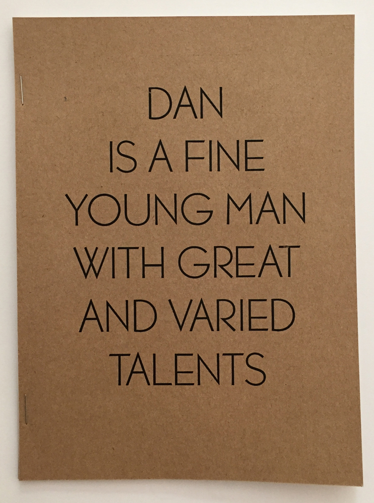

Dan Is A Fine Young Man With Great And Varied Talents
Summer 2016
My friend and I visit the famously abandoned Grossinger's Resort and find documents about a man named Dan. This zine features photography from the trip and a transcript of a conversation I had on the phone with Dan.
Photography by Cesca LaPasta and Alex Tomlinson